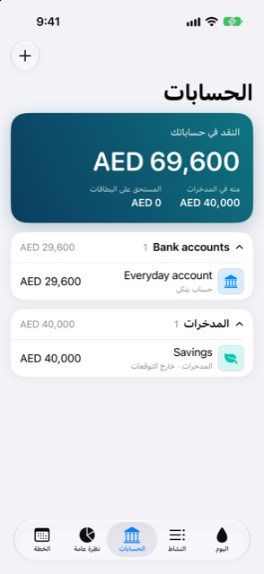

الدليل › الحسابات والبطاقات والأشخاص
صفحة الحسابات
بنوكك ومدخراتك ومحافظك وبطاقاتك وقروضك والأشخاص في قائمة واحدة.
تعرض شاشة الحسابات كل ما يحتفظ بأموال أو يدين بها، مجمّعة في أقسام يمكنك تقليصها. إنها الشاشة المخصصة لوضعك المالي الكامل: ما يمكنك إنفاقه، وما تدين به البطاقات، وأين يقف كل حساب.

متى تستخدمها
- لرؤية نقدك في لمحة، ومقدار ما منه في المدخرات مقابل ما تدين به البطاقات.
- لفتح حساب واحد وقراءة الأرقام المهمة لنوعه.
- لإضافة حساب جديد أو شخص، أو لإدخال كشف حساب أو لقطات شاشة.
- لإعادة تسمية حساب، أو تغيير شعاره، أو إدخاله في التوقعات أو استثنائه منها، أو أرشفته.
خطوة بخطوة
- افتح تبويب الحسابات. البطاقة العلوية، النقد في حساباتك، تجمع حسابات البنوك والمدخرات والمحافظ بعملتك الرئيسية؛ ولا يُخصم منها دَين البطاقات. تحته الصورة المستحق على البطاقات، وإذا لم تكن مدخراتك صفرًا فتظهر منه في المدخرات.
- مرّر إلى الأقسام. كل قسم منها — حسابات البنوك، المدخرات، النقد والمحافظ، بطاقات الائتمان، القروض، الاستثمارات، الأصول، الأشخاص — يعرض عدد الحسابات التي يحتويها، وعندما يمكن حساب إجمالي واحد بعملة واحدة يعرض ذلك الإجمالي. الأقسام التي لا تستخدمها لا تظهر.
- انقر على رأس القسم لتقليصه أو توسيعه.
- انقر على صف لفتحه. تُفتح البنوك والمدخرات والمحافظ والبطاقات والقروض في شكل بطاقة. تفتح الاستثمارات صفحة الحيازة، وتفتح الأصول الشراء المُجهَّز، ويفتح الأشخاص الشخص.
- انقر على البطاقة الكبيرة لقلبها. تُظهر الوجه الأمامي الرصيد (أو أنت مدين للبطاقات والقروض) والأرقام الخاصة بنوعه. ويُظهر الوجه الخلفي المزيد، إضافة إلى آخر حركاته.
- على ظهر البطاقة، انقر الإنفاق لترى أين ذهبت أموالها، أو المعاملات لكل شيء مع الأرصدة الجارية، أو التفاصيل لتغيير الحساب.
- لإضافة شيء، انقر زر زائد واختر إضافة حساب، أو إضافة شخص، أو استيراد كشوف الحساب، أو التحديث من لقطات الشاشة.
من الجيد أن تعرف
- يحمل ظهر كل بطاقة الأرقام الخاصة بنوعها: للبطاقة تاريخ كشفها وتاريخ استحقاقها والفاتورة التالية، وللقرض القسط وعدد مراته وعدد الأقساط المتبقية ومن يدفعها، وللبنك أدنى نقطة له في التوقعات وحركته الأخيرة.
- من التفاصيل يمكنك إعادة تسمية الحساب، واختيار شعاره، وإدخاله في التوقعات أو استثنائه منها، وأرشفة الحساب بعد تأكيد. ولسوى البطاقة أو القرض يمكنك أيضًا تحديد رصيد أدنى يجب المحافظة عليه. وللبطاقة تحدد دورة الفوترة الخاصة بها. يحفظ الحساب المُؤرشف تاريخه لكنه يختفي من النماذج ومن التوقعات.
- يظهر إجمالي القسم فقط عندما تغطيه عملة واحدة — لحسابات المال، عندما تستخدم كل حساباته العملة نفسها؛ وللاستثمارات، عندما يمكن حساب قيمتها. وتحذير على البطاقة العلوية، N من الحسابات مستبعدة: لا يوجد سعر صرف، يخبرك عندما يتعذّر تحويل حساب بعملة أخرى.
- للحساب بعملة أخرى يطلب لك نموذج الحساب سعر صرف مرة واحدة، عندما لا يُعرف سعر بعد. في اليوم الذي تدخل فيه سعرًا يفوز سعرك؛ ويستبدل به سعر أحدث يُجلب عند التحديث التالي.
ذات الصلة
هل هناك شيء غير واضح أو ناقص؟ اكتب إلى support@raveniq.ai واذكر الصفحة.